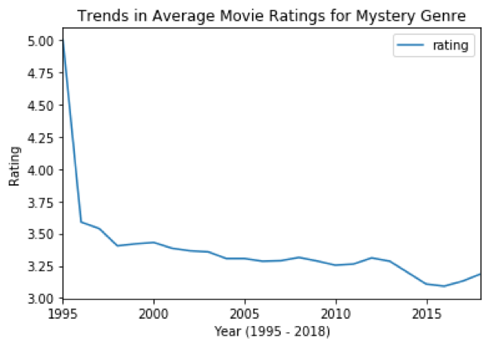
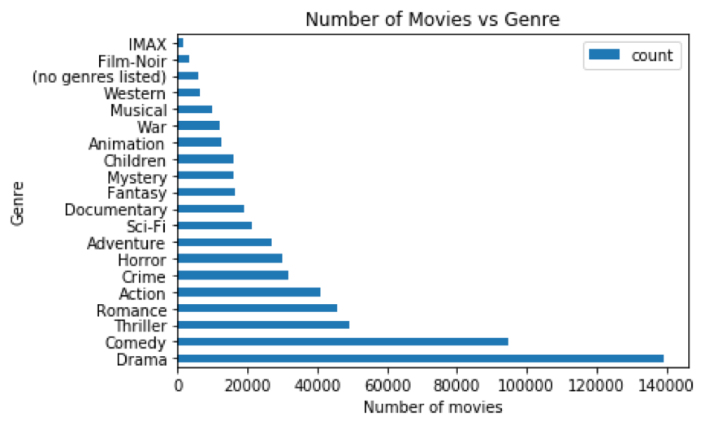
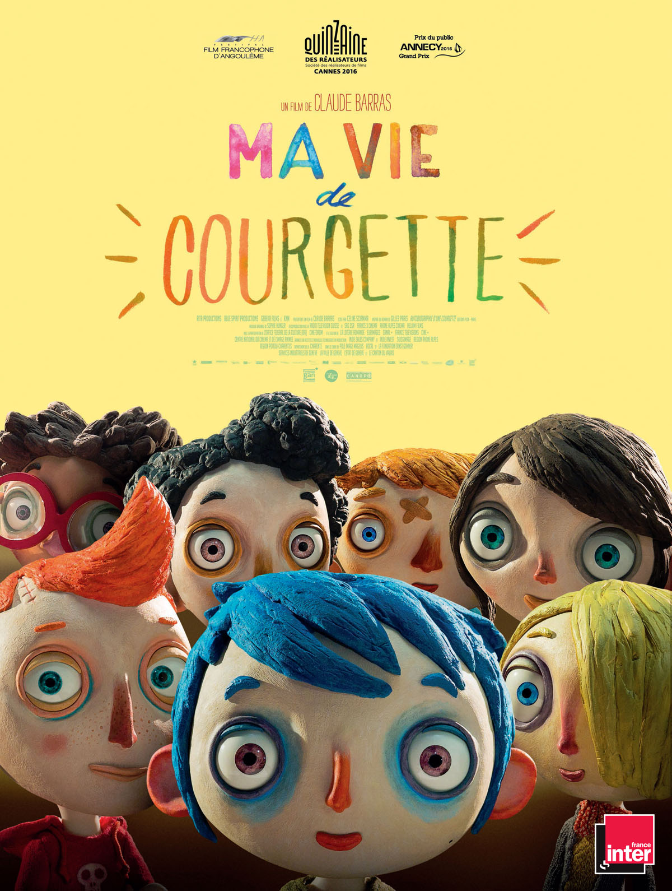
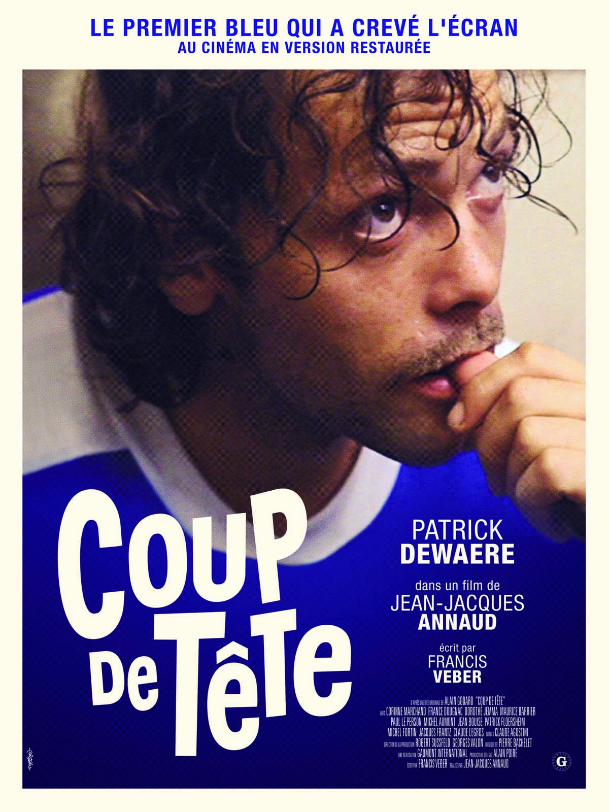

LE CINEMA À L'ÈRE DU BIG DATA
À la découverte de trésors cinématographiques avec MovieLens
Les mots des films : l'éloge de la simplicité
Quels sont les mots les plus fréquents dans un titre de films ? 20 Mars, 2020

« Tous les genres sont bons, hors le genre ennuyeux » Voltaire
Quels sont les genres cinématographiques les plus répandus ? 25 Mars, 2020

La profitabilité du 7e art
ROI et critique vont-ils de pair ? 30 Mars, 2020
Avec internet, les spectateurs peuvent aussi noter les films qu’ils regardent — la critique n’a plus le privilège de faire la pluie et le beau temps en ce qui concerne les nouvelles sorties et les spectateurs ont aussi leur mot à dire sur le sujet. A ce sujet, il est intéressant de s’attarder sur les rapports entre revenus et notations des spectateurs.
Invitation au voyage
Productions européennes et internationales, quelles différences ? 2 Avril, 2020
La victoire de Parasite aux Oscars 2020 et le succès conséquent du film aux Etats-Unis, pays connu pour être frileux aux productions étrangères (les américains n’aiment pas les sous-titres et le doublage coûtant cher) nous a donné envie de nous intéresser aux films étrangers qui y sont diffusés.

Quel budget pour une bonne note ?
Miser sur les genres gagnants 3 Avril, 2020
Avoir un gros budget garantit-il un succès critique? Deux films très populaires, Toy Story 3 (2010) et Mad Max: Fury Road (2015) ont nécessité respectivement 200 et 150 millions de dollars à produire. Difficile d’imaginer leur réussite sans les moyens mis en œuvre pour les filmer.
La durée des films : l'éloge de la longueur ?
Les films sont-il vraiment plus longs ? 4 Avril, 2020
« C'était le bon temps. Un film, en gros, durait une heure et demie. Tout le monde était d'accord là-dessus. Cette sagesse n'est plus de saison. Aujourd'hui, tomber sur un long-métrage de moins de deux heures tient presque du miracle », Eric Neuhoff. Et si l'allongement de la durée des films n'était qu'une idée reçue.

Notre objectif
Netflix & chill ! Telle est la nouvelle habitude adoptée par un nombre grandissant de français ces dernières années. La situation actuelle du confinement a d'ailleurs nettement participé à la croissance des plateformes de streaming ce dernier mois. Nous avons souhaité explorer et analyser les métadonnées MovieLens sur plus de 45 000 films et 26 millions de notes de plus de 270 000 utilisateurs.
Vous trouverez sur ce blog nos derniers insights sur le cinéma, son évolution et ses caractéristiques changeantes dans un monde en constante évolution.
Notre équipe
Nous sommes un groupe de cinq élèves en dernière année à l'Ensae, sur le plateau de Saclay. Vous souhaitez plus d'informations ? Contactez-nous à l'adresse suivante: movielens-project@ensae.fr.
Nos sources
Nos analyses se basent sur des données collectées par l'utilisateur Kaggle Rounak Banik, disponible ici : https://www.kaggle.com/rounakbanik/the-movies-dataset.
Elles s'appuient sur la base de données MovieLens, mise à disposition par GroupLens, qui contient les évaluations de plus de 270 000 spectateurs pour 45 000 films (soit 26 millions d'observations), et des informations sur le genre, le budget, la durée et la popularité des films. Les informations sur les mots-clés présents dans les titres et les résumés des films proviennent de l'API TMDb.
Tendances cinématographiques
Depuis 1995, les films du genre mystère subissent un fort désintérêt des utilisateurs. Ces vingt dernières années voient une baisse continue de la note donnée sur cinq, avec une forte chute dans les années 95-97.
L'influence prédominante du genre dramatique
L'art dramatique surpasse pleinement les autres genres sur la plateforme MovieLens. Pour plus d'informations, n'hésitez pas à consulter le deuxième article du blog : "Tous les genres sont bons hors le genre ennuyeux" 
En manque d'inspiration pendant le confinement ?
-
Chungking Express
Wong Kar-wai -

Ma vie de Courgette
Claude Barras -

Coup de tête
Jean-Jacques Annaud
Popular terms
genre films titre cinéma palme d'or MovieLens data oscars budget